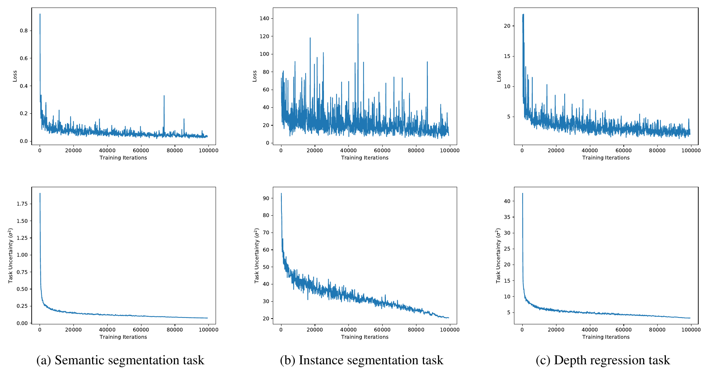

Uncertainty Weighting learns each task’s loss weight from how noisy the task is. Noisier tasks get smaller weights.
On this page
Uncertainty Weighting changes only the loss. Each task’s loss is multiplied by a weight that depends on a learned noise level σi, and a penalty term stops every noise level from growing without limit. The noise levels are trained every step, by the same optimizer and in the same backward pass as the network. The extra state is one number per task, and the extra cost is negligible. Where GradNorm sets the weights from training speed, Uncertainty Weighting sets them from each task’s learned noise level.
The paper that introduced the method, by Kendall, Gal and Cipolla (2018), tests it on scene understanding with Cityscapes, a dataset of street scenes. A regression task predicts a number or vector per pixel; a classification task picks a label per pixel.
The paper shows that performance depends strongly on the loss weights, and a grid search over weights is expensive. Its answer is to learn one number per task, the task uncertainty, as a parameter during training, and derive the loss weight from it.
Like GradNorm, Uncertainty Weighting is a loss-weighting method. Unlike GradNorm, it never measures a gradient. It treats each task’s output as a probability distribution over answers, and uses one rule from probabilistic modeling: a loss that is inherently noisier should count less.
Some tasks have answers that are fully determined by the input. Others have a floor of error that no model can beat, because the information is not in the image; exact per-pixel depth is an example. The paper models this with one noise level σi per task, the same for every input, called homoscedastic task uncertainty. A larger σi means a noisier task. Pushing hard on a noisy loss partly fits the noise, so the loss weight falls with 1/σi2 (1/(2σi2) for a regression task, Section 4).
A penalty term, log σi, grows with the noise level and prevents this.
Running example, NYUv2 indoor photos: semantic segmentation (seg, a class per pixel, classification, line 2) and depth (metres per pixel, regression, line 1), illustrative.
| seg | depth | |
|---|---|---|
| σi | 0.70 | 1.50 |
| weight | 2.041 | 0.222 |
| loss Li | 1.2 | 0.9 |
| bracket, weighted loss plus log σi | 2.092 | 0.605 |
Figure 3. Depth’s σ moves the bar (each task’s share) and the curve (total loss L).
The weighted losses and penalties are summed into one total, and one backward pass gives gradients to the network and the noise levels together (code in Section 7).
Figure 4. One step on three Cityscapes tasks with example noise levels.
The stepper’s three Cityscapes tasks, every loss at 1.00.
| Semantics | Instance | Depth | |
|---|---|---|---|
| σ | 0.70 | 1.50 | 2.40 |
| weight | 2.04 | 0.22 | 0.09 |
| penalty log σ | −0.36 | 0.41 | 0.88 |
sem the semantics taskLi task i’s lossσi its learned noise levellog σi the penalty on a large σiL the total lossΣi sum over instance and depthEach σ2 falls steeply in the first few thousand iterations and then drifts down slowly with its loss. The noisiest loss, instance segmentation, keeps by far the largest σ2.

The paper's caption for the whole figure (arXiv:1705.07115) reads “Learning task uncertainty. …”
exp(-s) divided by 2. In the code, 1 + REG supplies the 2 for regression tasks only; REG is written for this page’s three tasks (semantics, instance, depth, in that order) and marks the regression ones.s / 2 in the code. A larger start value of s starts every weight smaller, and a smaller one starts them larger; the paper found the end result insensitive to it.Running example (formula values).
| seg | depth | |
|---|---|---|
| s = log σ² | log 0.49 = −0.713 | log 2.25 = 0.811 |
| weight from s | e0.713 = 2.041, no halving | e−0.811 halved = 0.222 |
The step below runs every training step on that step’s batch, with losses as batch means, as in the paper.
import torch
import torch.nn as nn
from torch.optim import Adam
# s[i] = log sigma_i^2
s = nn.Parameter(torch.zeros(K))
params = list(model.parameters())
params.append(s)
opt = Adam(params, lr=lr)
# 1 marks a regression task
REG = torch.tensor([0., 1., 1.])
def uw_step(losses):
L = torch.stack(losses)
w = torch.exp(-s) / (1 + REG)
total = (w * L + s / 2).sum()
opt.zero_grad()
total.backward()
opt.step()| Setting | Source value |
|---|---|
| Start value of s | 0 (σ = 1); the paper reports the result is robust to the start value and the noise levels converge within a few hundred training iterations |
| Learning rate for s | No separate rate: the paper trains everything with SGD at 2.5×10−3 with polynomial decay (Appendix A); the GradNorm paper used 0.025 with Adam for its uncertainty-weighting baseline |
| Training length | 50,000 iterations at 128×256 for the comparison runs; about 100,000 iterations in the runs of Figure 5, read from its axis |
| Final loss weights | 43 : 1 : 0.16 for semantics, depth and instance (full-size model) |
There is no official code. LibMTL ships a version (--weighting UW) that uses the same s = log σ2 form with the regression factor ½ for every task.
The paper uses weight decay 10−4 and does not say whether s is excluded. Decay pulls s toward 0, which pulls every weight toward its start value. Gradient Balancing Inside the Training Loop covers how the noise levels interact with the optimizer in Sections 9.3 and 9.2.
GradNorm and Uncertainty Weighting both change only the loss weights. Both beat fixed weights in their papers:
| Paper | Comparison | Result |
|---|---|---|
| Uncertainty Weighting | Three Cityscapes tasks at 128×256, against equal weights and the best fixed weights from a grid search | Better on all three tasks |
| GradNorm | NYUv2, against 100 networks with random fixed weights | The best of the 100 fell short of GradNorm at the same training step |
Uncertainty Weighting can be combined with a gradient method, because it only changes the losses. The weights handle scale; a method such as PCGrad or CAGrad then handles direction.
Neither weighting method fixes conflicting gradients, gradients that point against each other. Uncertainty Weighting never looks at gradients, and GradNorm measures only their norms.
Two methods learn each task’s loss weight (GradNorm and Uncertainty Weighting). Four methods edit the task gradients (PCGrad, GradVac, CAGrad and MGDA). The question each one answers:
| Method | The question it answers |
|---|---|
| GradNorm | How much weight should each task's loss get so all tasks train at a similar rate? (learned during training from how fast each loss falls) |
| Uncertainty Weighting (this page) | How much weight should each task's loss get, given how noisy that task's targets are? (the noise level is learned along with the model) |
| PCGrad | How should a task gradient be edited when it conflicts with another task's gradient? |
| GradVac | How should each pair of task gradients be moved toward a target cosine, a running average of that pair's past cosines? |
| CAGrad | How can a step raise the smallest per-task improvement while staying near the average gradient? |
| MGDA | Which convex combination of task gradients lowers every task's loss at once, and when does no such combination exist? |
When the weights are right but the gradients still conflict, PCGrad edits the directions.